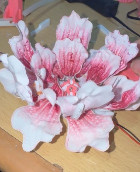
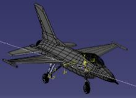
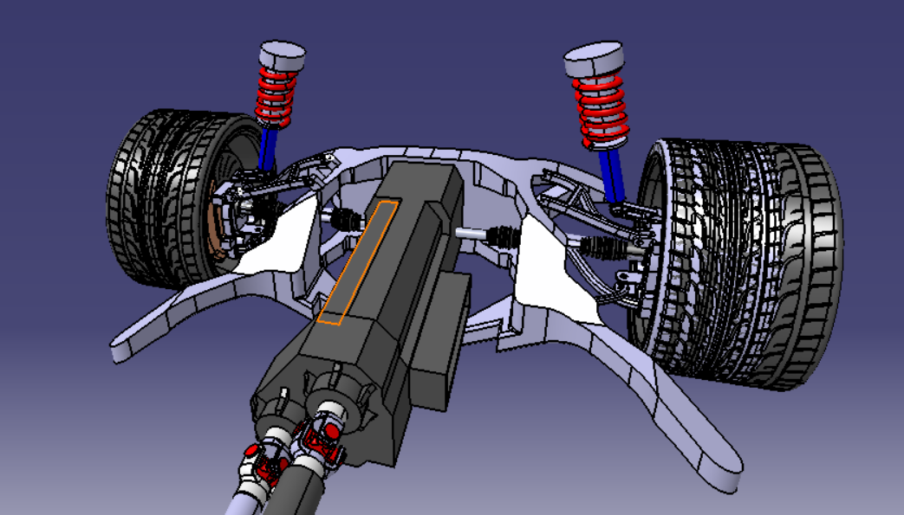
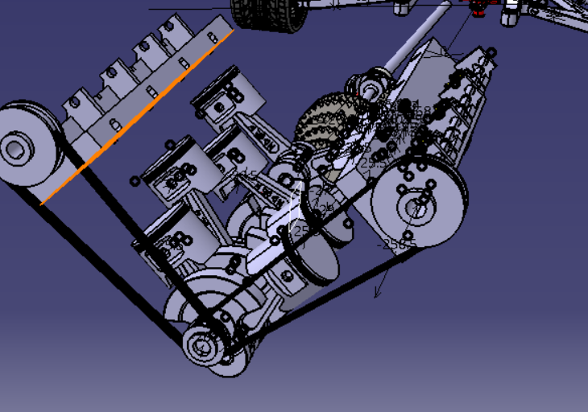
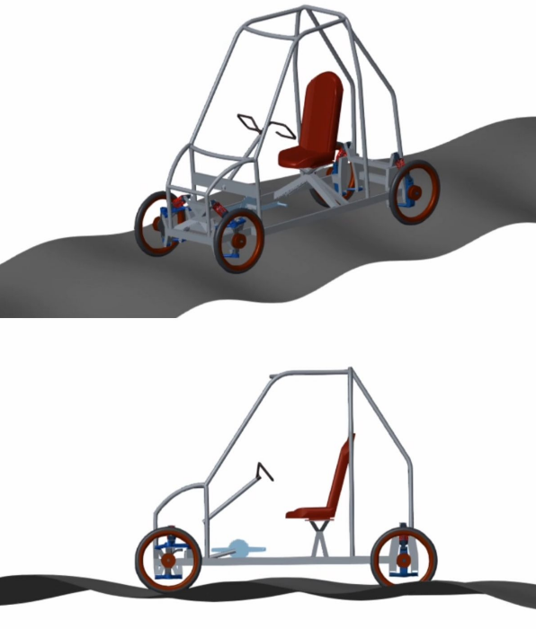

3 PROJECTS / COLLECTION
Additional / Fun projects
Explored art projects, free-form CAD modeling, and machine-learning-assisted mechanism design through personal projects.
Art
Kinetic Art

Personal Gift

Lithophane Family Portrait

Free-Form CAD
Surface Modelling



Kinematic-Linkage Design
Open Linkage Study ↗

Computational Design Exploration
ML-Based Kinematic Optimization of Variable Compression Engine

Suspension Mechanisms
